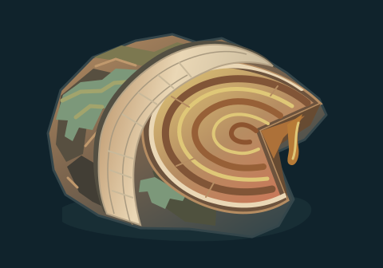
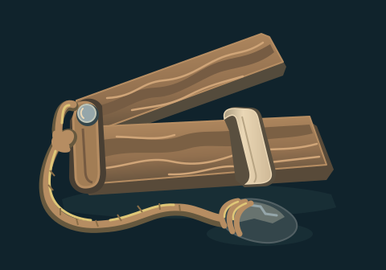
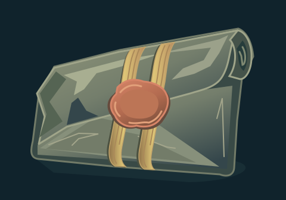
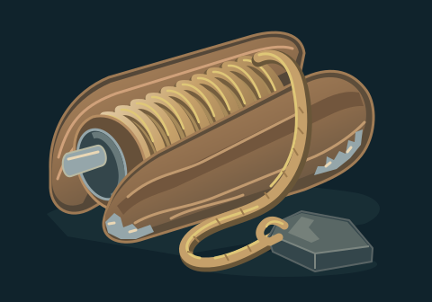
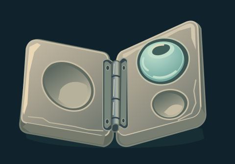

Six optional future concepts informed by Briarfen and Saltreach. They have no runtime slot,
established quest, accepted lore or game selection. The enlarged illustration is followed by
native 160×112 and compact 80×56 study views.
Root core specimen

Briarfen marsh/root material study for a possible inspection or recovery quest object.
candidate-with-caveat · Wood rings, cut wedge and fitted sample band read
clearly. Resin is illustrated as an amber solid/viscous plane, without a physical-liquid
claim.
Fen water gauge

Marsh/cistern measurement tool concept, not a supported skill or map objective.
candidate · Folded two-slat gauge, actual hinge/slider and connected
cord/weight are distinct at both study sizes.
Mire dispatch

Possible portable message/evidence carrier; its author, message and history remain
unspecified.
candidate · Waxed-cloth packet, uneven rolled corner and fitted reed
bands distinguish an evidence carrier from a charm or equipment category mark.
Annealing proof tile
Saltreach Glassworks material evidence concept, not a relic lens, weapon blade or current
quest requirement.
candidate-with-caveat · Thick layered glass edge and notched sample read
clearly. Broad square composition can resemble a tray; keep as a Glassworks material-test
concept, not a finished quest icon.
Cistern depth spool

Portable cistern survey tool; distinct from the existing flail, shield, staff or rune
category marks.
candidate · Oblong winding spool, continuous rope and broad resting plumb
weight read as a survey tool. Fine winding ridges recede at 80px.
Glass bead mold

Possible Glassworks recovery/crafting evidence, not a declared recipe or inventory slot.
candidate · Opened mold, three unequal cavities, fitted hinge and one
aqua bead remain clear at compact size; no unsupported casting recipe is implied.